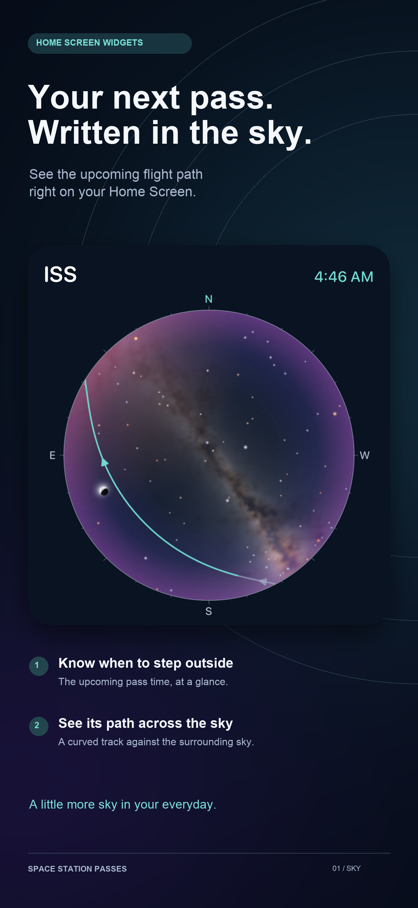
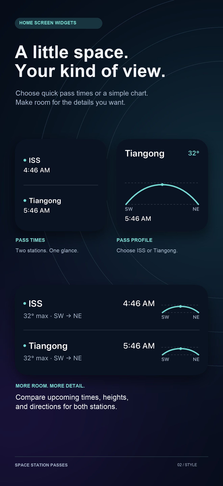
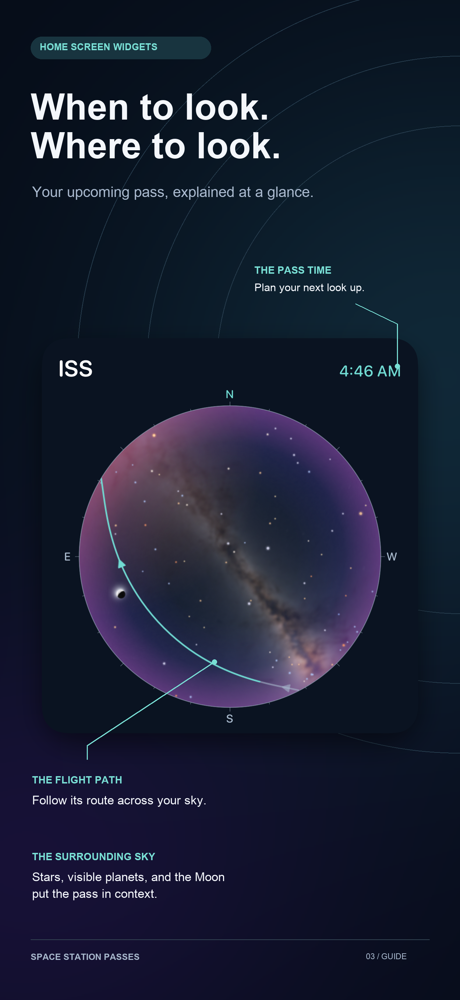

01 · Sky hero
Emphasizes the upcoming path and quick access to the pass time.
Three reusable marketing templates using native widget renders. Open any image for the full 1320 × 2868 export. These are concepts for review; release fixtures and translations come after design selection.

Emphasizes the upcoming path and quick access to the pass time.

Explains customization and the information available in each layout.

Teaches people how to read the widget with external callouts.